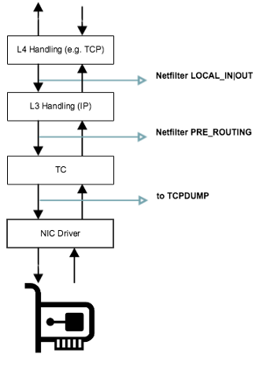
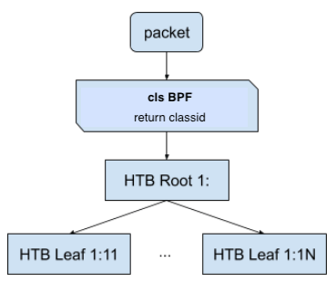
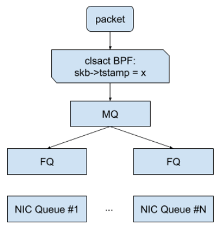

#1209 tc-bpf¶
第一个 tc-bpf 程序¶
程序：
#include <linux/bpf.h>
#define SEC(x) __attribute__((section(x), used))
SEC("mycls")
int cls_main(struct __sk_buff *skb)
{
return 2; // TC_ACT_SHOT
}
char __license[] __section("license") = "GPL";
TC_ACT_*宏定义：https://github.com/torvalds/linux/blob/v5.9/tools/include/uapi/linux/pkt_cls.h#L32__sk_buff结构体定义：https://github.com/torvalds/linux/blob/v5.9/tools/include/uapi/linux/bpf.h#L3718
保存代码为文件 foo.c，然后编译：
# clang -O2 -target bpf -c foo.c -o foo.o
加载运行/查看/删除：
# tc qdisc add dev eth0 clsact
# tc qdisc show dev eth0
qdisc fq_codel 0: root refcnt 2 limit 10240p flows 1024 quantum 1514 target 5.0ms interval 100.0ms memory_limit 32Mb ecn
qdisc clsact ffff: parent ffff:fff1
# tc filter add dev eth0 ingress bpf da obj foo.o sec mycls
# tc filter add dev eth0 egress bpf da obj foo.o sec mycls
# tc filter show dev eth0 ingress
filter protocol all pref 49152 bpf chain 0
filter protocol all pref 49152 bpf chain 0 handle 0x1 foo.o:[mycls] direct-action not_in_hw id 17 tag 3b185187f1855c4c jited
# tc filter show dev eth0 egress
filter protocol all pref 49152 bpf chain 0
filter protocol all pref 49152 bpf chain 0 handle 0x1 foo.o:[mycls] direct-action not_in_hw id 18 tag 3b185187f1855c4c jited
# tc filter del dev eth0 ingress pref 49152
# tc filter del dev eth0 egress pref 49152
上面的程序运行后会 drop 所有的包。
参考：
tc 在网络栈中的位置¶
tc 程序的执行点位于系统网络栈的最底层，在 NIC Driver 之后，最关键的是在 tcpdump 之后，所以 tcpdump 又可以使用了 ✌️。
完整的图参见：https://commons.wikimedia.org/wiki/File:Netfilter-packet-flow.svg
{kind=link}
使用 tc-bpf 来实现带宽控制¶
tc-bpf 只能用来控制哪些流需要进行带宽控制，哪些不需要，实际的带宽控制需要结合 tc 的其他功能模块来完成。一般有以下 2 中方式。
方法一：结合 HTB 队列¶
Hierarchical Token Bucket (HTB) 多层令牌桶 是 tc 中常用的一种用于控制带宽的队列算法。
tc qdisc add dev eth0 root handle 1: htb
tc class add dev eth0 parent 1: classid 1:1 htb rate 10kbit
tc class add dev eth0 parent 1: classid 1:2 htb rate 10mbit
在 bpf 中，通过返回限速的 classid 可以将流量分配给不同的带宽控制类别去。tc 命令行中一般使用 MAJOR:MINOR 这样的格式来表示 classid，MAJOR、MINOR 都是十六进制的。在代码中 classid 是 u32 类型的，转换方法： classid = MAJOR<<16 | MINOR 。
https://github.com/shemminger/iproute2/blob/v6.4.0/tc/tc_util.c#L89
SEC("mycls")
int cls_bpf_prog(struct __sk_buff *skb)
{
if (...) {
return 0x10001; // classid 1:1
} else if (...) {
return 0x10002; // classid 1:2
}
return 0;
}
挂载 tc cls_bpf 程序：
tc filter add dev eth0 bpf obj cls_bpf.o sec mycls
cls_bpf、act_bpf、clsact 是三个不同的 tc-bpf 挂载点。cls_bpf 通过返回不同的 classid 来分类包，act_bpf 通过返回 action code（ TC_ACT_OK、 TC_ACT_DROP 等）来处理包。这两个加载点是老的挂载点。所以加载的时候和前文第一个 tc-bpf 程序加载方式不一样，不需要加 da direct-action 参数。关于两者的差别可以参见：http://arthurchiao.art/blog/understanding-tc-da-mode-zh/
clsact 可以同时完成 cls_bpf 和 act_bpf 的功能，返回值返回 action code，还可以通过传入的上下文参数 skb->tc_classid 字段来改变 classid（但是这个方式没有调通，不知道为啥，わかりませんでした）。
方法二：结合 FQ 队列¶
Fair Queue(FQ) 公平队列，这个方法是 google 在 https://netdevconf.info/0x14/pub/papers/55/0x14-paper55-talk-paper.pdf 这个论文里提到的。这个方法中 bpf 程序通过上下文参数中的 skb->tstamp 设置 skb 的 EDT（ Earliest Departure Time），FQ 模块会读取这个时间来调度包的发送。
SEC("myedt")
int cls_bpf_prog1(struct __sk_buff *skb)
{
// 将发送包的时间延后 1 秒
skb->tstamp = bpf_ktime_get_ns() + 1000000000;
return TC_ACT_OK;
}
挂载 tc clsact bpf 程序和 FQ 模块：
tc qdisc add dev eth0 root fq
tc qdisc add dev eth0 clsact
tc filter add dev eth0 ingress bpf da obj cls_bpf.o sec myedt
tc filter add dev eth0 egress bpf da obj cls_bpf.o sec myedt
这个方法比方法一的性能要好，但是实现稍微复杂点，上面的 bpf 程序只是展示了这种控制的原理，实际应用中 bpf 需要自行通过算法来计算 EDT。
内核中自带的一个比较完整的示例：